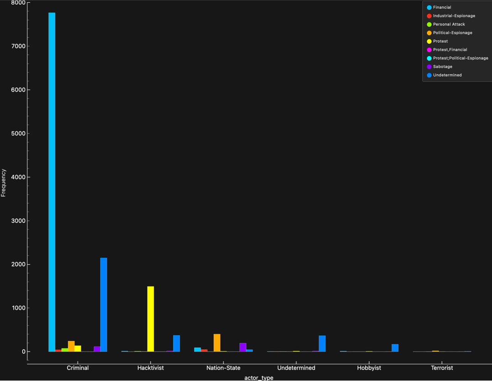
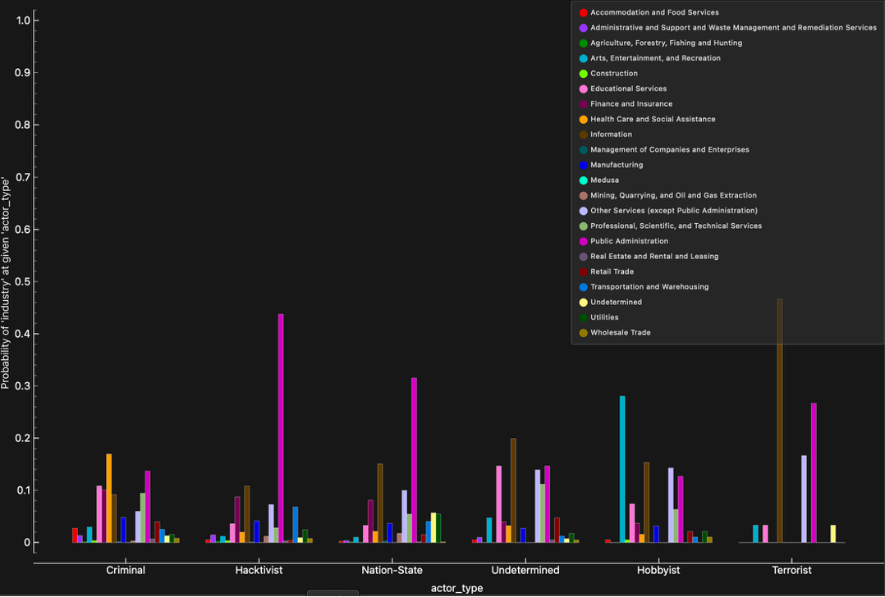

In this project I used the University of Maryland’s data set focused on recent cyber-attacks to understand motives and create a plan for the best way to defend against threat actors based on the company’s industry. I first started by answering the following questions
What Type of threat actors are most common?
What are the Motives of each type of threat actors?
What is the probability that a threat actor attacks a specific type of industry?
After asking these questions I cleaned the data to perform analytics and create informative graphs which can be see down the page.

This chart displays how many attacks occurred by a type of threat actor. Many attacks are performed by criminals followed by hacktivists. We can also see hobbyist is one of the least common threat actors meaning most of these attacks know what they are doing when performing an attack.
Criminal attacks often had financial gain as their motive followed by pollical espionage not including the undetermined category. Hacktivists have barely any other motive besides protest thus having a strong correlation with the type of attacks they perform. Nation states mostly performed attacks to gain information on other nation states or attacks that sabotaged assumptively other pollical organizations.
The figure above displays how likely a type of company in a certain industry is to be attacked by an actor type. Examples being companies in public administration having roughly a 42% chance to be attacked by a hacktivist as well as nation states having a high probability of targeting companies in information and public administration
These charts when used together can be helpful for different industries to understand the types of risks they face and how to defend against them. Notable findings are that criminals are most likely looking for financial gain and are the most common threat actor. They tend to target health care and social assistance to receive money quickly. Putting data points together can help us build theories for the types of attacks occur and how to defend.